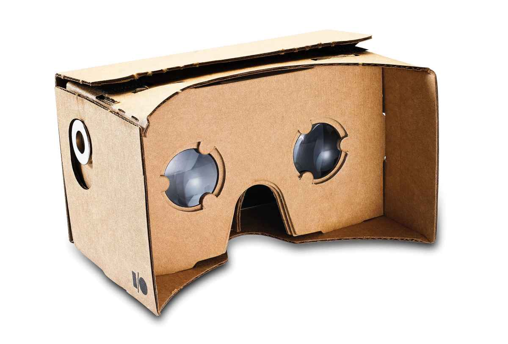

Overview
As a part of our coursework at UCL, we got to design a mobile application to use with the Google Cardboard. The mission was to use a drone to capture data useful for medical students and medical staff and display it in a visual way using the Cardboard.
As of today, inefficiency in determining conditions at critical locations such as South Sudan is a big problem for medical staff at the location. Refugee camps are unpredictable in terms of location and number of refugees are constantly changing, and human estimation by driving or walking around is both time consuming and inaccurate. We intend to solve these problems by creating an application to run on a mobile phone, using a Google Cardboard. It will be linked to sensors and video cameras on a drone which can be flown over the area to be investigated.
Who are MSF?
Medecins Sans Frontieres, or Doctors Without Borders, is an “international, independent, medical humanitarian organisation” operating in war-torn regions and developing countries facing endemic diseases.
When operating in sites such as refugee camps, slums or dense forests, it can be difficult to get an broad view of the field. This project can help by providing aerial views and analysed data of the area MSF is operating in.
Why Google Cardboard?
The Google Cardboard is a practical, hand-held device that creates an augmented reality environment for the user. Because of it’s compact size and light weight, the Cardboard is a better alternative to a laptop or a tablet as it allows the medics to set up faster with less equipment.